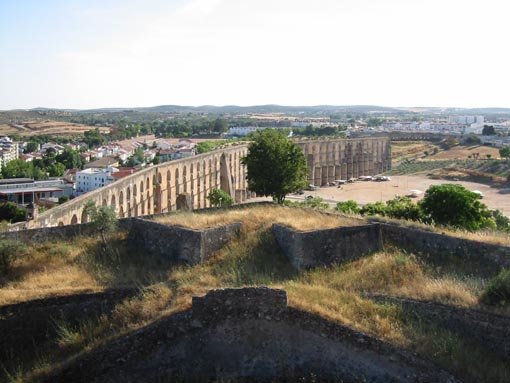
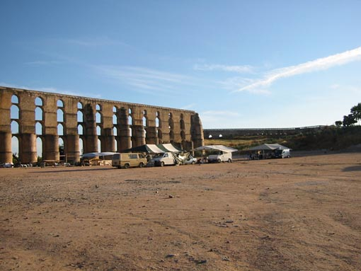

 
Mesto Elvas je zelo pomembno v Portugalski zgodovini zaradi bli¾ine ©panije. Utrdba okoli starega dela mesta je ena bolje ohranjenih v Evropi. Na fotografiji je ogromen akvadukt, ki so ga gradili 120 let (1498 - 1622). Razteza se 8 kilometrov èez dolino in ¹e danes oskrbuje mesto z vodo. Na sliki se vidi tudi cigansko naselje, kjer zjutraj nastane zanimiva tr¾nica.